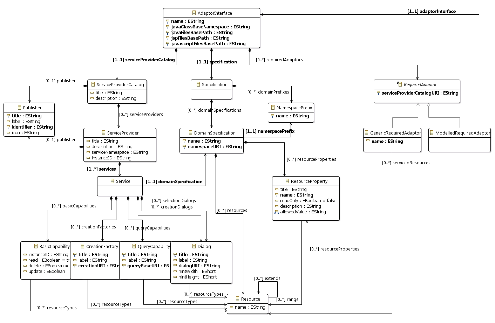
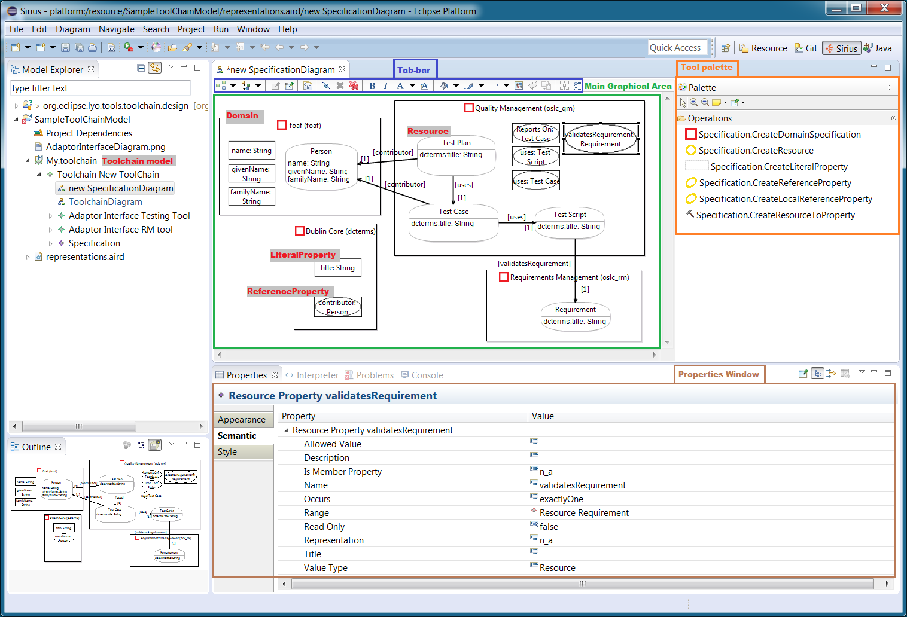
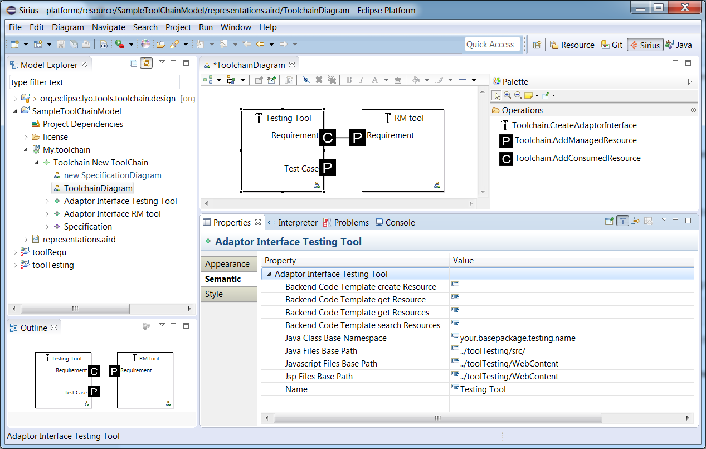
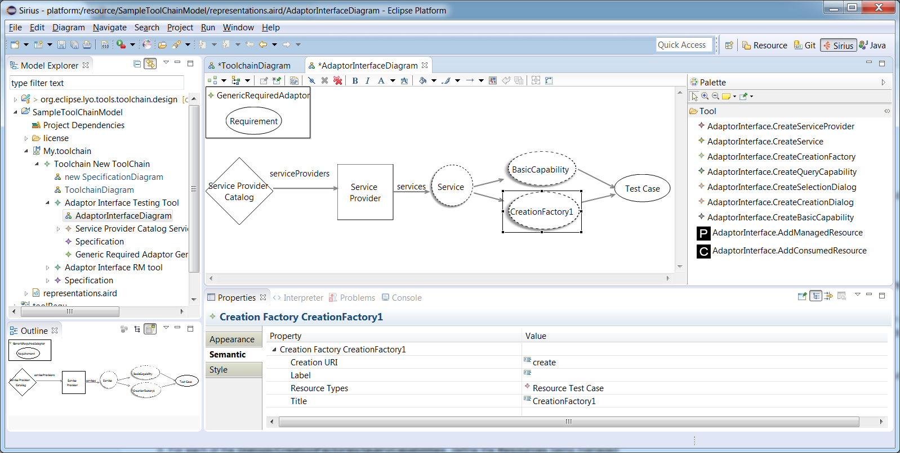
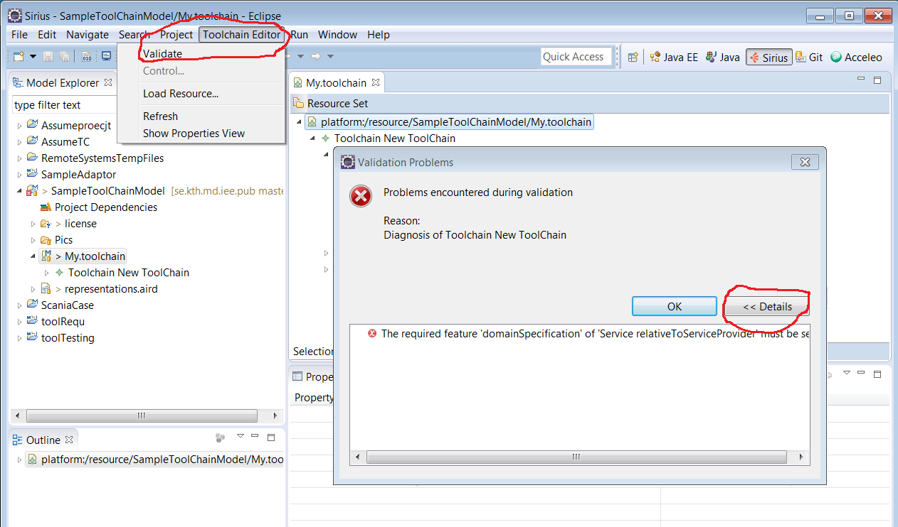

Introduction
This workshop presents the use of Lyo Designer to graphically model a complete OSLC-based toolchain (including the interactions between OSLC servers and clients), and/or single server and/or client. The instructions also include a walkthrough of the generated Lyo-compliant code.
For seperations of concerns, Lyo Designer structures the toolchain model around the following three viewpoints (Illustrations and details can be found later in this workshop):
- Domain Specification View – To define the types of resources,
their properties and relationships, according the OSLC Core
Specification
and the Resource Shape constraint
language.
- Lyo Designer can also be used to solely model domains, as instructed under the Domain Specification Modelling Workshop.
- Toolchain View – To allocate resources to tools. For each tool, the set of resources being exposes and/or consumed are defined.
- Adapter Interface View – To design the internal details of the tool interface. Sufficient information is captured in this view, so that an almost complete interface code, which is compliant with the Lyo software development kit (SDK) can be generated.
Working with the model allows you to work at a higher level of abstraction, without needing to deal with all the technical details of the OSLC standard (such as Linked Data, RDF, etc.). However, a basic understanding of the Linked Data and OSLC concepts remains necessary in order to build a valid model. For an introduction to Linked Data and OSLC, the following resources on open-services.net can be recommended: Linked Data and OSLC Tutorial (2015 Update)
This tutorial takes you through the steps from creating the initial modelling project to the code generation and final execution of the tool adaptors.
- First, you will perform the necessary installation and configuration of your Eclipse environment.
- Create an empty modelling project, configured to start modelling your toolchain.
- Graphically specify your toolchain and adaptor functionality, from which almost complete code will be generated.
- Perform the steps to generate the necessary Lyo code.
- Perform the final implementation steps to make the adaptors ready to run.
Table of Content:
- Table of Content:
- Sample Modelling Project
- Projects layout
- Create modelling project
- Modelling Overview
- General Modelling Instructions
- Domain Specification View
- Toolchain View
- Adapter Interface View
- Adding the OAuth support
Bug Reporting
The prototype presented here is under development and its features may change over time. Your feedback, suggestions for improvements and bug reports are appreciated. In particular, the graphical notation being used is experimental and certainly needs further improvements. Please send any questions or suggestions to the project mailinglist lyo-dev@eclipse.org, or report Bugs/features on Github
References
If you wish to cite this modelling prototype in scientific papers and communications, please reference:
Jad El-khoury, Didem Gurdur, Mattias Nyberg, "A Model-Driven Engineering Approach to Software Tool Interoperability based on Linked Data", International Journal On Advances in Software, vol. 9, no. 3 & 4, s. 248-259, 2016.
El-Khoury, Jad. "Lyo Code Generator: A Model-based Code Generator for the Development of OSLC-compliant Tool Interfaces." SoftwareX, 2016.
Eclipse Setup
First, make sure your Eclipse environment is setup as expected for general Lyo development, as instructed in Eclipse Setup for Lyo-based Development
Then, make sure you install Lyo Designer
Create a Toolchain Modelling Project
We will here create an Eclipse project within which we create the actual model. The java code that will be ultimately generated will be produced in another set of projects.
Sample Modelling Project
As a complement when following the instructions below, you can find the code for a completed workshop under the Lyo Adaptor Sample Modelling git repository.
Projects layout
You will be modelling a toolchain that can potentially consist of a number of OSLC adaptors, each of which is itself an Eclipse project. A recommended structure of your projects is the following:
toolchain-project/
toolchain-project-model/
adaptor1-project-webapp/
adaptor2-project-webapp/
Where
The top
toolchain-projectdirectory may be a git repository roottoolchain-project-modelis the Lyo Toolchain Modelling projecteach
adaptor-project-webappcontains each of the adaptors generated from the definitions intoolchain-project-model.
Create modelling project
- In your Eclipse workspace, switch to the Modeling perspective
- Create a new modelling project
- Select New > Modelling Project
- Choose a project name
- Create a toolchain model
- Right click the newly created project, and select New > other…
- In the Wizards window, navigate and select Lyo Designer > OSLC Toolchain Model, then press Next
- choose a suitable file name (say toolchain.xml) for the toolchain model, then press Next
- Set Model Object to Toolchain
- Press Finish
- Right-click the project again, and select Viewpoints selection
- select ToolChainViewpoint
- Press OK
- View the initial diagrams
- In the Model Explorer, by pressing the triangle/arrow to the left of the toolchain.xml file , expand the file structure until the
SpecificationDiagram & ToolchainDiagram entries are visible.
- Note: Do not double-click on the file. This will instead open the file in an xml editor.
- You can now open and edit any of these views, by double-clicking on the desired entry.
- In the Model Explorer, by pressing the triangle/arrow to the left of the toolchain.xml file , expand the file structure until the
SpecificationDiagram & ToolchainDiagram entries are visible.
Note: Lyo Designer also allows you to break up the model into a set of modelling projects for more complicated organisation. See Handling Large Models for more details.
Model the Toolchain
You are now ready to graphically specify the desired functionality of your toolchain and/or adaptor(s). From such a model, the Lyo code generator can then produce the bulk of the code necessary to realize the modelled functionality.
The instructions to define the three views that form the complete model are presented sequentially below. However, the views can be defined in any other order.
Modelling Overview
The figure below presents the overall meta-model underlying a toolchain model (and its corresponding three viewpoints). The model consists of 3 main parts:
- Domain Specification - Modelling the OSLC domain specification(s) to be exposed and/or consumed by the adaptor, as defined in the OSLC Core Specification.
- Server - modelling the OSLC resources - and their corresponding services - to be exposed by the adaptor.
- Client - modelling the interactions - as a client - that the adaptor might have with other OSLC servers.

General Modelling Instructions
The toolchain modelling prototype is based on Sirius. The reader is referred to the Sirius User Manual for detailed instructions on how to use Sirius-based modellers. Below is a very short extract (Refer to diagram below):
- A diagram editor is divided in three areas:
- The main graphical area, which shows the elements and supports direct interaction with them;
- The tool palette, which gives access to additional tools (for example creation tools to add new elements to the diagram);
- The tab-bar at the top of the graphical area, which provides additional, more global operations.
- One interacts with the diagram and its elements through
- The Properties window (Select the menu Windows > ShowView > Properties to load the window)
- Contextual menus available on the graphical elements.
- One creates elements and edges in the main graphical area through
one of the tools in the tool palette.
- When a tool is selected and you move the mouse on the diagram, you will notice that the mouse cursor’s shape changes to indicate whether the action is allowed or not, at this particular location. For example some elements can only be created at the top-level of the diagram (in the diagram’s background itself), and not inside other elements.
- To create an Element - The basic pattern is to left-click on the tool in the palette, and then apply it once on the diagram. (No drag-drop)
- To create an Edge between Elements –
- Select the edge operation from the tools pallet
- Select the desired source element in the diagram.
- Select the desired destination element in the diagram.
- An edge is now created between the source and destination.
- The tab-bar contains the Filters Selection button, than provide alternatives to hide (or show) diagram elements.
Domain Specification View
In this view, you can define the set of domain specifications of relevance to the tool-chain, including the definition of Resources and Resource Properties that form each Domain Specification.
The instructions below explain how to define your domains within the same toolchain model. Lyo Designer also allows you to import and reuse existing Domain Specification models, as instructed under the Domain Specification Modelling Workshop

Using the tools pallet (located on the right), create any number of Domain Specifications.
For each such Domain Specification, set the domain properties - Name, Namespace Prefix and Namespace URI – as desired.
- For example, the OSLC RM domain specification defines the namespace URI of http://open-services.net/ns/rm# with a preferred namespace prefix of oslc_rm.
- Note: The Namespace Prefix property cannot be changed directly. Instead, you need to select the Namespace Prefix entry in the Model Explorer tree first.
Inside each Domain Specification, use the tools pallet to create any number of Resource elements.
- Select the operation CreateResource from the tools pallet, and then select the containing Domain Specification in the diagram.
- Set the required attributes for each Resource (such as its name) in the Properties window.
- Once created, a Resource can be moved to another Domain by a simple drag-and-drop action.
Inside each Domain Specification, use the tools pallet to create any number of (a) LiteralProperty, (b) ReferenceProperty, and (c) LocalReferenceProperty elements.
- Select the desired operation from the tools pallet, and then select the Properties list within the desired Domain Specification in the diagram.
- Set the required attributes for each Property (such as Occurs, description, range, …) in the Properties window.
- Once created, a LiteralProperty can be changed to a ReferenceProperty (or vice versa), by simply changing the Range and value type values of the property in the Properties window.
To relate a Property to a Resource, drag-and-drop the property from the Properties list to the desired resource.
- A relation to a LiteralProperty is listed inside the Resource element it is allocated to.
- A relation to a ReferenceProperty is shown as an arrow between the Resource and the Resource the ReferenceProperty refers to.
- Note: A Resource can refer to Properties (Literal or Reference) from any other Domain Specification.
Toolchain View
In this view, you define the set of tools (at least their OSLC interfaces) that form your toolchain. You can also model the interactions between the tool interfaces, by defining the resources each interface produces and/or consumes.

- Using the tools pallet, create any number of Adaptor Interface elements.
- For each Adaptor Interface, you only need to set its name property. All other properties (such as java Class Base Namespace, Java Files Base Path, etc.) are now deprecated.
- For each Adaptor Interface, use the AddManagedResource & AddConsumedResource tools to define the resources that the interface manages or consumes respectively.
Adapter Interface View
For each Adaptor Interface in the Toolchain view, you can now detail the internal design of the adaptor by defining its OSLC Service Providers, Services, etc. This information forms the basis for the code being generated.

- In the Toolchain view, double-click on the Adaptor Interface to open its internal design view. If the view is being opened for the first time, you will be prompted for a diagram name.
- Configure the Adaptor Interface's server and generation settings. All settings can be found under the Configuration element in the diagram. The element consists of three sets of configurations as follows:
- General: Contains the general generation settings:
- Files Base Path: The path where the generated files will be generated. Set the path relative to your current location, which is the toolchain modelling project. If you have multiple adaptors, you will most likely want to generate each adaptor into a separate project. In this case, set the path to be, for example, ../adaptor1-project-webapp/. If you are modelling a single adaptor and the model exists in teh same project as the target generation project, you can set the path to .
- Java Base Package Name: the name of the base Java root package from which the code of your adaptor will be generated.
- Server Configuration: relating to the settings of your OSLC server.
- Do not Regenerate Jsp Files: Set this property if you don't want the automatic re-generation of the JSP files. Missings files will be generated, but any existing files will be left untouched.
- Root Server Base Url, Application Context path & Servlet Url Pattern: Configure the URL of your server, which is a combination of these settings to be <Root Server Base Url>/<Application Context path>/<Servlet Url Pattern>.
- Jetty Port: Set the server port to be used when running your adaptor as an embedded Jetty server (for quick debugging) using the maven goal jetty:run-exploded.
- Project Configuration: relating to the generation of the development project-specific files, such as the Pom.xml and web.xml files
- Do Not Generate Project Configuration Files: Set this property if you don't want the automatic generation of these files.
- Group Id, Artifact Id & Version: define the maven project settings.
- Lyo Version: Define the version of Lyo libraries to use.
- General: Contains the general generation settings:
- By default, each Adaptor Interface is defined with one
ServiceProviderCatalog, and one ServiceProvider. You will build upon this default model to define your own services, etc.
- Set the properties for each of these elements as desired. (See steps below for detailed instructions)
- Note that the model currently supports the definition of one (and only one) ServiceProviderCatalog per adaptor.
- Use the tools pallet to create any additional ServiceProviders.
Such elements need to be directly associated with an existing
ServiceProviderCatalog element in the diagram.
- From the Pallet, select the CreateServiceProvider tool
- In the diagram, select the ServiceProviderCatalog to which this ServiceProvider belongs.
- For the newly created ServiceProvider, fill-in the ServiceProvider properties (title, description) as defined according to OSLC.
- For each ServiceProviderCatalog and ServiceProvider in the model, there will be a corresponding JAX-RS web service, that responds to web requests on a specific relative URL. If you want to control the relative URLs of these web services, specify some of the provided optional properties, as instructed in Configuring the URLs of the OSLC Services.
- For each ServiceProvider, create any structure of Services
and their contained [Selection Dialog | Creation Dialog | Creation Factories] capabilities.
A Service element need to be directly associated with existing
ServiceProvider element in the diagram. To create a new Service:
- From the Pallet, select the CreateService tool
- In the diagram, select the ServiceProvider to which this Service element belongs.
- For each Service in the model, there will be a corresponding JAX-RS web service, that responds to web requests on a specific relative URL. If you want to control the relative URLs of these web services, specify some of the provided optional properties, as instructed in Configuring the URLs of the OSLC Services.
- To define a particular capability, select from the Pallet the desired [Selection Dialog | Creation Dialog | Creation Factories] tool.
- In the diagram, select the Service to which this capabiliy element belongs.
- For each [Selection Dialog | Creation Dialog | Creation Factories], there will be a corresponding JAX-RS method under the web service of its containing Service. The URI property under such an element define the relative URL of the method.
- Define the Resources being managed by this capability
- From the Pallet, select the AddManagedResource tool
- In the diagram, select the capability that manages the Resource.
- To define a JAX-RS web service that can perform the RESTful C.R.U.D (Create Read Update Delete) method for a particular OSLC resource, select the Web Service tool from the pallet.
- Define the necessary properties
- Name - This denotes the Java class name that implement the service method.
- Service URL Pattern - The relative URL pattern for the web service.
- Resource Url Pattern - The relative URL pattern for the CRUD methods under this web service.
- You can use [ResourceType] to denote the RDF type of the resource.
- You can use the parameter variables necessary to identify a specific resource. For example, changeRequests{changeRequestId} leads to the url http://localhost:8080/YourAdaptor/services/changeRequests/1 mapping the value 1 to the changeRequestId parameter in the java code.
- Define which of the Read|Delete|Update methods to generate.
- Define the Resources being managed by this capability
- From the Pallet, select the AddManagedResource tool
- In the diagram, select the Web Service that manages the Resource.
- Define the necessary properties
- Define the Resources that the adaptor consumes
- From the Pallet, select the AddComsumedResource tool
- In the diagram, select the RequiredAdaptor element.
- View the Toolchain view and note that any added Provided/Consumed resources are now also represented as ports in the toolchain view.
Validate the model
At any time, you can validate your model to ensure that all required properties are defined as expected:

- In the ModelExplorer, double-click on the toolchain model (toolchain.xml) file, to open the model using a standard editor.
- Select the menu item Lyo Designer > Validate
- If you receive Valiation Problems, press Details to read the error details, and correct your model accordingly.
- You can also validate any part of the complete model, but navigating
down to the particular element in the model tree diagram, before
selecting the validate menu.
- Note: The context menu may contain two Validate menu items. The first is specific to the Toochain Editor, while the second is for general EMF modelling. You are to select to first entry.
Set up Lyo projects
Once your model is complete and validated, you are ready to generate the Java code. It is no longer necessary to manually create the Eclipse projects for each of the adaptors, since these are created by the generation process. But make sure your adaptor configuration is correct, as instructed above.
Generate Java code for Lyo
Once the toolchain model is defined and validated, you can generate the corresponding code for each adaptor through the following simple step:
- Trigger the generation
- For complete toolchain: Right-click on the toolchain model (toolchain.xml) file, and select OSLC Lyo Designer > Generate Complete Toolchain Java Code
- For an adaptor: Right-click on the adaptor in the Toolchain view, and select OSLC Lyo Designer > Generate Java Code
- You will now be prompted to enter the base path to which the java classes are to be generated.
- NOTE: Alternatively, to avoid such prompt, you can define this path through a generationPath property in a generator.properties file. The properties file is expected in the same location as the model file.
- Press OK
- Once successful, you will be prompted with a dialog that confirms generation completion.
Notes:
- Lyo Designer supports an incremental development of the adaptor model. Any manual changes to the generated code (within designated placeholders) are maintained upon a subsequent change in the adaptor model, and resulting code re-generation.
- Lyo Designer allows you to generate different parts of the code into different projects (or file locations). This allows for better reuse of generated code packages. See Controlling the generation parameters of Domain Specification(s) for more details.
Upon a successful code generation, all the necessary Java classes for complete ready-to-run Lyo projects are produced. The next section gives an overview of the generated code, before proceeding with an explanation of the necessary manual code to be provided.
Browsing the generated code
Besides the AdaptorManager class (see next section), all generated classes have complete functionality, and need not be modified nor complemented with additional manual code. However, the classes contain placeholders that allow the developer to insert additional code and hence modify the generated default code where necessary. such manual code remains intact after subsequent generations, if modifications are placed within the designated placeholders. This allows for the incremental development of the adaptor model, and its resulting code.
- To illustrate, open a class file in the package your.basepackage.name.resources, and note the following placeholder:
// Start of user code imports// End of user code
- Any code entered between these two lines of code is maintained across subsequent generations. In this example, the placeholder is intended for developer-specific imports, but any Java code can be inserted.
The following Java classes are generated based on the adaptor specification model:
Package: your.basepackage.name.resources
- for each OSLC-resource of relevance to your project, a corresponding Java class is defined. The class includes the appropriate OSLC annotations, instance attributes, getters, setters, etc.
- Which resource classes are generated? Each resource for which an OSLC-service is defined; as well as - recursively - the resource extending such a resource, and the resources defined for any of its attributes. that is, all resources needed.
Package: your.basepackage.name.services
- this package contains the JAX-RS classes corresponding to the resource services defined in the model, as well as those for the ServiceProvider and ServiceProviderCatalog.
- Each JAX-RS class contains the necessary methods that correspond to Query Capabilities, Creation Factories, Dialogs, as well as the CRUD methods to interact with resources - as defined in the adaptor model.
- Each JAX-RS class contains methods to respond to both HTML and RDF/XML requests.
Package: your.basepackage.name.servlet
- Contains necessary classes for the project such as ServiceProviderFactory, ServletListener, etc.
Package: your.basepackage.name.clients
- for each required adaptor, a corresponding Java class is defined.
- Currently, the class simply provides a GET method for each resource provided by the required server. This class is a starting point to explore the remaining functionality provided by the OslcClient class, and its methods will be expanded in the future.
Package: your.basepackage.name
- The AdaptorManager class contains the set of methods that will ultimately communicate with the source tool to access its internal data, and eventually expose information as OSLC resources.
- Only skeletons of the methods are generated. it remains the task of the developer to manual code these methods, as detailed in the next section.
Jsp pages are also generated to handle HTML requests, in the folder webcontent/your/base/package/name. These pages are very useful for debugging purposes:
- resource presentations
- query results
- creation dialogs
- selection Dialogs
- ServiceProvider presentations
- ServiceProviderCatalog presentations
Fill in the internal implementation of each adaptor
The manual code the developer needs to implement is concentrated in a single
class – the AdaptorManager class (in the your.basepackage.name package).
The methods that need to be provided are:
- contextInitializeServletListener & contextDestroyServletListener - to implement any application initialisation and termination activities such as establishing a connection to a database.
- getServiceProviderInfos - returns the set of ServiceProviders
- for each serviced resource, methods to get, create, search and query such resources.
Adding the OAuth support
Since Lyo 2.3.0, OAuth registration code is no longer generated for the adaptors.
In order to enable OAuth on a newly generated adaptor, add the following code to the Custom Resource Classes protected code block in the Application class:
RESOURCE_CLASSES.add(Class.forName("org.eclipse.lyo.server.oauth.webapp.services.ConsumersService"));
RESOURCE_CLASSES.add(Class.forName("org.eclipse.lyo.server.oauth.webapp.services.OAuthService"));
Run the adaptor
Once the manual code is completed, You are now ready to run an adaptor.
- Select the menu Run ➞Run Configurations ...
- Select the newly created configuration
- Click Run
You can now browse and debug your adaptor through the generated HTML pages starting with http://localhost:8080/YourAdaptor/services/catalog/singleton. You need to at least implement the getServiceProviderInfos method and some of resource C.R.U.D. methods first.